High priority
Open meadow groundcover v3
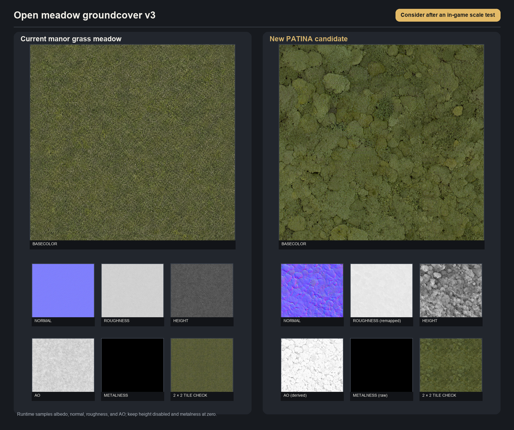
Runtime samples albedo, normal, roughness, and AO; keep height disabled and metalness at zero.
fal-ai/patina/material · non-destructive review
No existing texture was deleted or replaced, and no production material path changed. SeedThree vegetables were excluded.
Read the full inventory and integration notes Open the machine-readable manifest
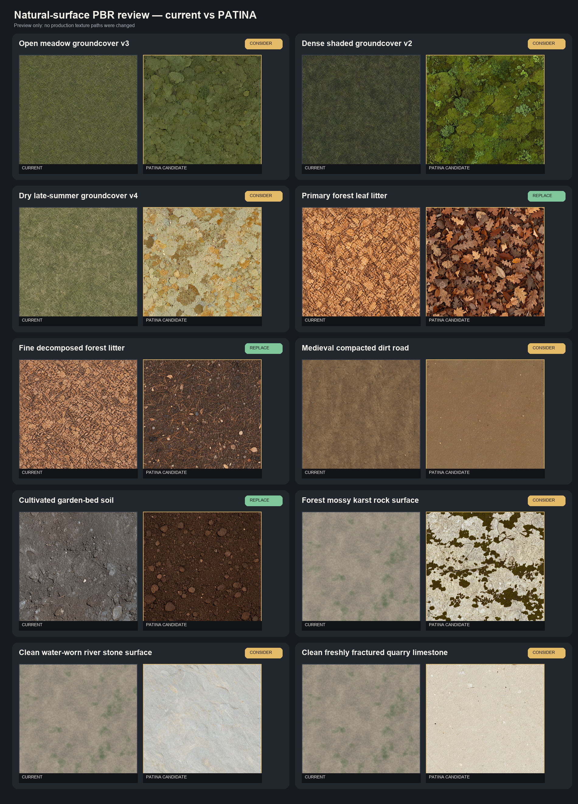
High priority

Runtime samples albedo, normal, roughness, and AO; keep height disabled and metalness at zero.
High priority
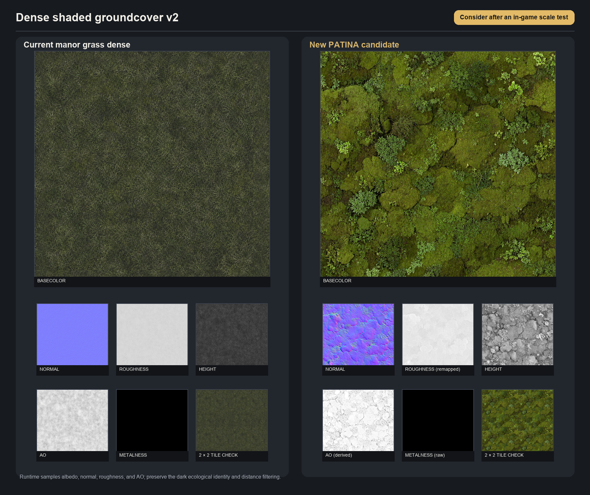
Runtime samples albedo, normal, roughness, and AO; preserve the dark ecological identity and distance filtering.
High priority
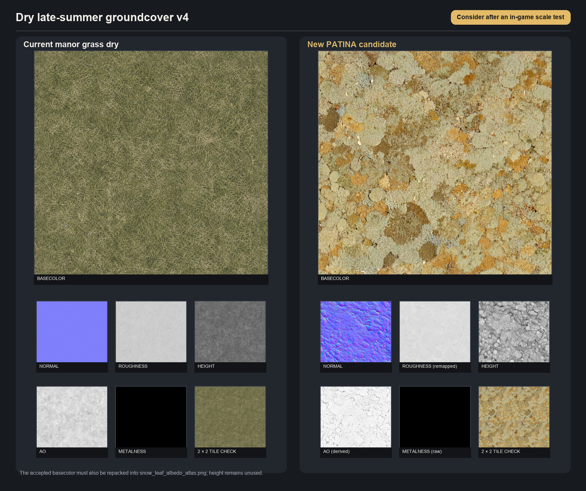
The accepted basecolor must also be repacked into snow_leaf_albedo_atlas.png; height remains unused.
Highest priority
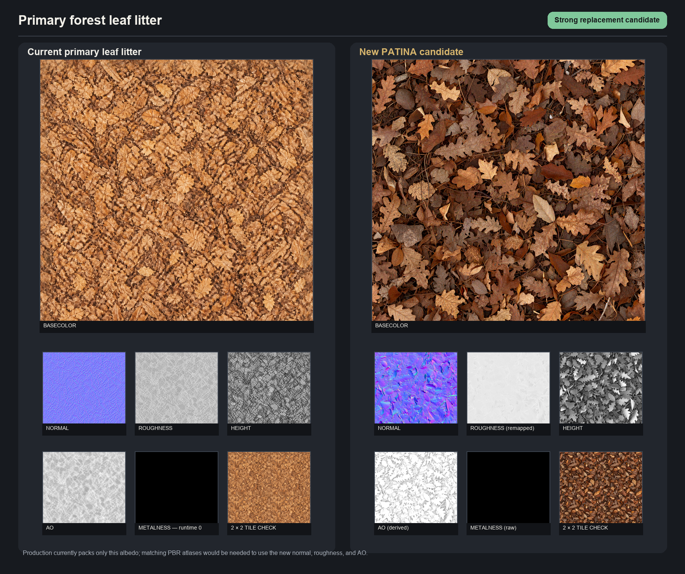
Production currently packs only this albedo; matching PBR atlases would be needed to use the new normal, roughness, and AO.
Highest priority
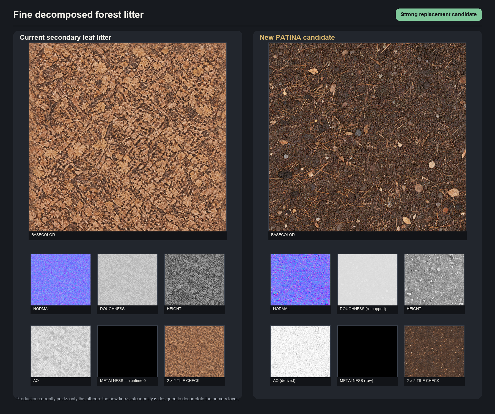
Production currently packs only this albedo; the new fine-scale identity is designed to decorrelate the primary layer.
High priority
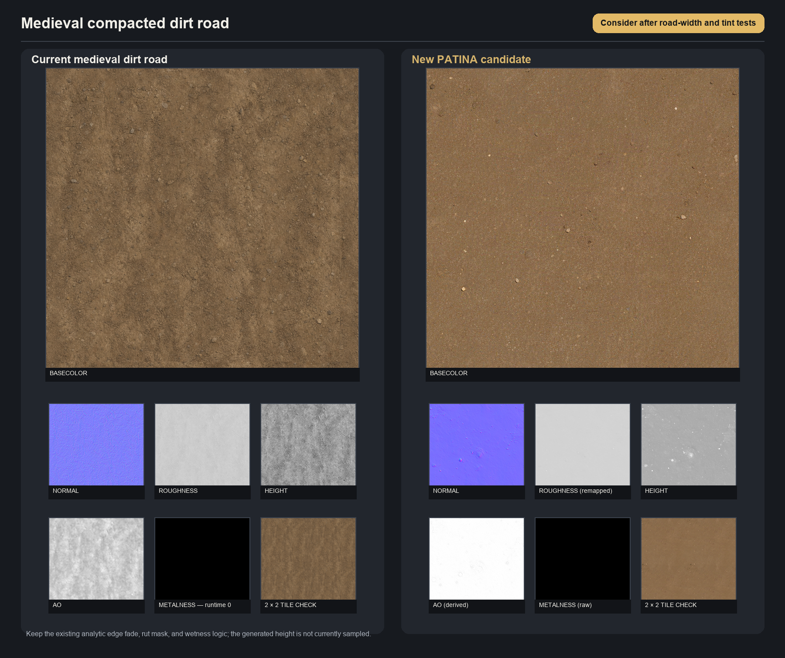
Keep the existing analytic edge fade, rut mask, and wetness logic; the generated height is not currently sampled.
Medium priority
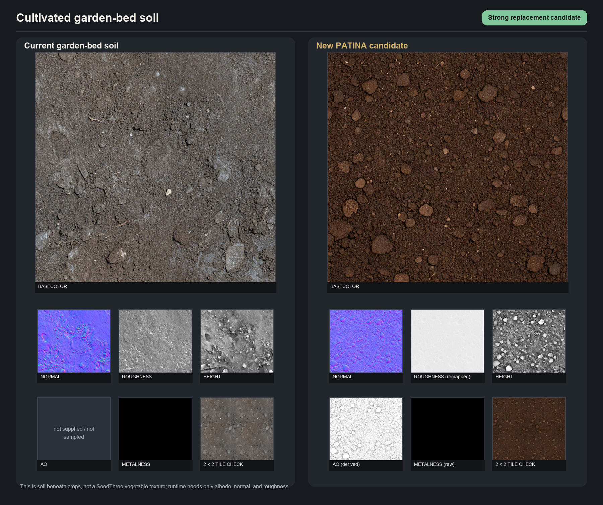
This is soil beneath crops, not a SeedThree vegetable texture; runtime needs only albedo, normal, and roughness.
Medium priority
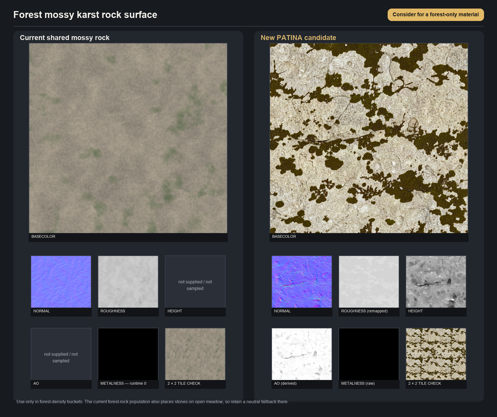
Use only in forest-density buckets. The current forest-rock population also places stones on open meadow, so retain a neutral fallback there.
Medium priority
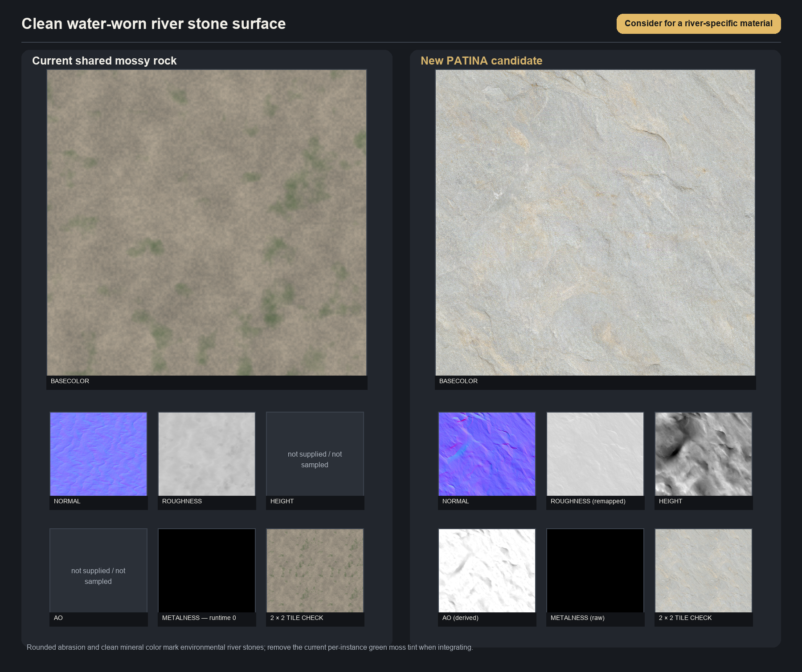
Rounded abrasion and clean mineral color mark environmental river stones; remove the current per-instance green moss tint when integrating.
Medium priority
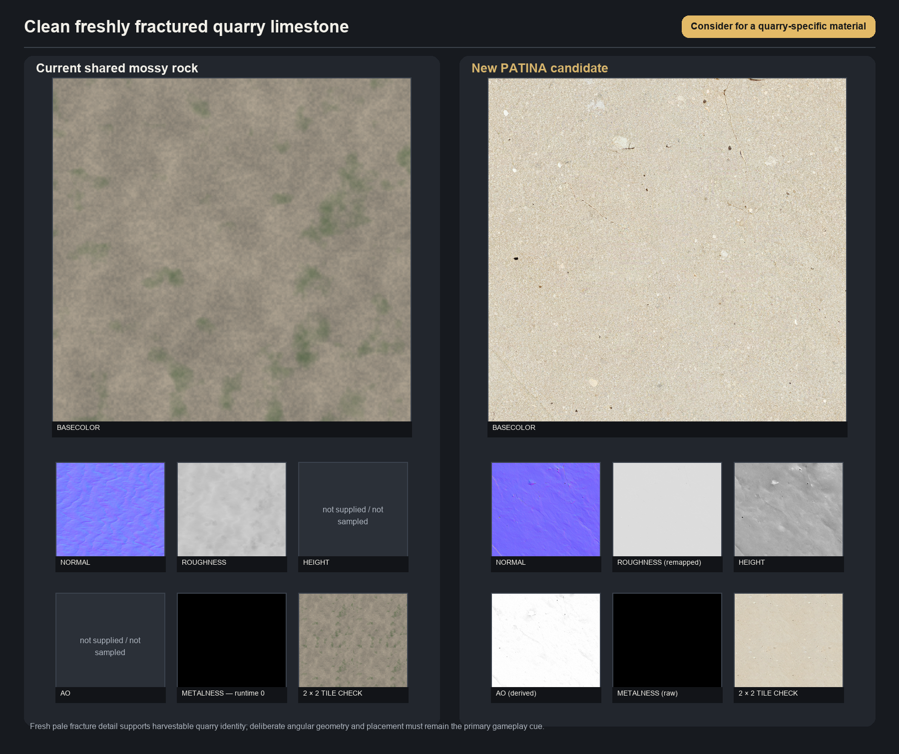
Fresh pale fracture detail supports harvestable quarry identity; deliberate angular geometry and placement must remain the primary gameplay cue.